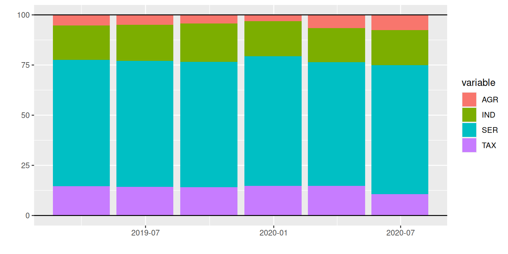
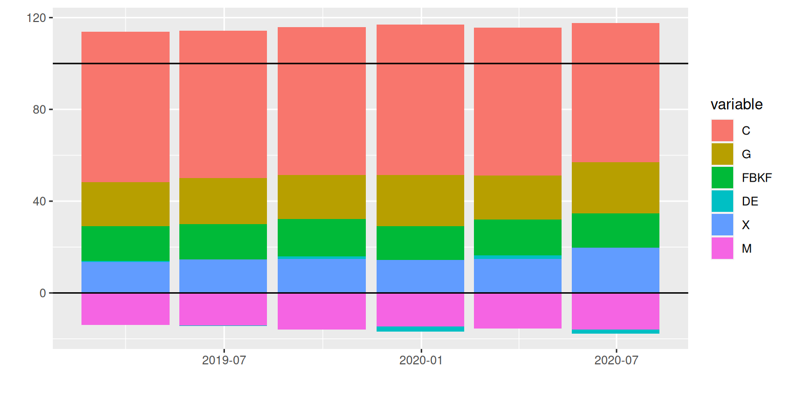
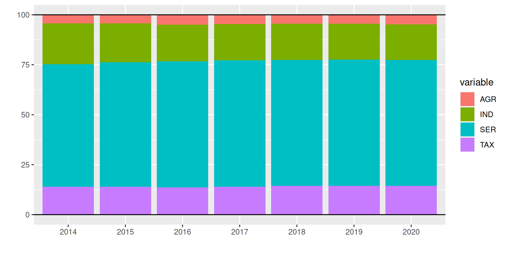
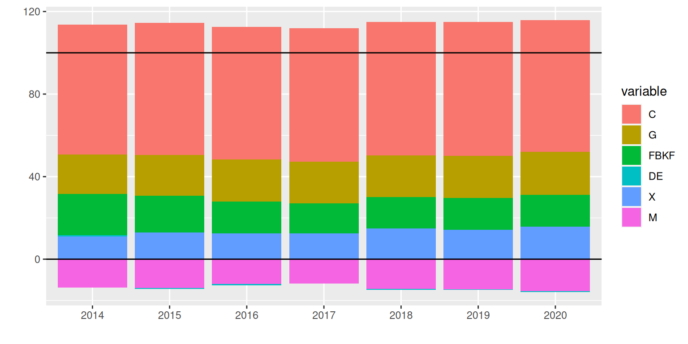

plot shares of the brazilian GDP data from the SIDRA-IBGE website
In this post, we will calculate the participation of GDP by sectors and by demand variables, and make plots and tables. As usual, my source code for the functions can be found here.
First, let’s load up our functions and other libraries.
# source functions
source("../../R/funs-macro.R")
# load libraries
library(reshape2)
library(ggplot2)
library(dygraphs)
#' [Why not dplyr](https://www.stat.pitt.edu/stoffer/tsa4/Rissues.htm)Load the data.
# load data
gdp.nom <- readRDS("../../data/gdp-nominal.rds")
gdp.rea <- readRDS("../../data/gdp-real-NSA.rds")
gdp.rsa <- readRDS("../../data/gdp-real-SA.rds")Before we calculate the shares, let’s replicate the IBGE release of 2020:Q1 GDP, but with all the other quarters included.
# gdp table function
gdp.table <- function(data, type="level" , period="qtr", digits=0)
{
# TODO: ERROR CATCHING
# subset vars by type
if(type=="level") vars <- c("AGR", "IND", "SER", "VAB", "TAX", "GDP", "C", "G", "FBKF", "DE", "X", "M")
else if(type=="ret4") vars <- c("AGR", "IND", "SER", "VAB", "TAX", "GDP", "C", "G", "FBKF", "X", "M")
else if(type=="ret1") vars <- c("AGR", "IND", "SER", "VAB", "GDP", "C", "G", "FBKF", "X", "M")
# subset time by period
if(period =="year") data <- data[c(grepl("*-12-*", data$date)[-NROW(data)], TRUE),]
# trasnform data
newdata <- data.frame( t( apply( data[,vars], 2 , rev) ) )
# attribute colnames
if(period =="qtr") colnames(newdata) <- rev( paste0( data[,"year"], ":Q", data[,"qtr"] ) )
else if(period =="year") colnames(newdata) <- rev( c( paste0( data[-NROW(data),"year"] ), paste0( data[NROW(data),"year"], ":Q", data[NROW(data),"qtr"] ) ) )
# return table
return( round(newdata, digits) )
}
# pretty show table
paged_table(gdp.table(gdp.nom), list(rows.print=12) )Full disclosure, I started by trying to do this with the dplyr package, but I am not as experienced with the GRAMMAR of data, so I defaulted to the R-base functions.
Now that we have the GDP nominal levels, let’s calculate the share of each variable.
# gdp shares
gdp.share <- cbind(gdp.nom[,c(1,2,3)], 100*gdp.nom[,-c(1,2,3)]/gdp.nom$GDP )
# sum gdp.nom over 4 quarters and coerce to data.frame
gdp.nom.ac4 <- data.frame( apply( gdp.nom[,-c(1,2,3)], 2, sum4 ) )
# divide by gdp to get shares
gdp.share.ac <- cbind( gdp.nom[,c(1,2,3)], 100*gdp.nom.ac4/gdp.nom.ac4$GDP )
paged_table(gdp.table(gdp.share, digits=1), list(rows.print=12) )
# plot SECTORS function
plot.sector.gg <- function(data, start.year=0, type="qtr")
{
# TODO: ERROR CATCHING
# index of years
id.year <- (data$year >= start.year)
# conditional date
if(type=="year")
{
id.qtr <- c(grepl(4, data$qtr)[-NROW(data)], TRUE)
newdata <- data[(id.year & id.qtr),]
newdata$date <- newdata$year;
newdata <- newdata[,c("date", "AGR", "IND", "SER", "TAX")]
} else
{
newdata <- data[id.year, c("date", "AGR", "IND", "SER", "TAX")]
}
# melt data
newdata <- melt( newdata, id="date" )
#plot
ggplot(newdata, aes( x = date, y = value, fill = variable) ) +
geom_bar( stat="identity" ) +
geom_hline(yintercept=c(0, 100) ) +
xlab("") + ylab("")
}
# Acutally plot Sectors
plot.sector.gg(gdp.share, start.year=2019)
# plot DEMAND function
plot.demand.gg <- function(data, start.year=0, type="qtr")
{
# TODO: ERROR CATCHING
data$M <- -data$M
# index of years
id.year <- (data$year >= start.year)
# conditional date
if(type=="year")
{
id.qtr <- c(grepl(4, data$qtr)[-NROW(data)], TRUE)
newdata <- data[(id.year & id.qtr),]
newdata$date <- newdata$year;
newdata <- newdata[, c("date", "C", "G", "FBKF", "DE", "X", "M")]
} else
{
newdata <- data[id.year, c("date", "C", "G", "FBKF", "DE", "X", "M")]
}
# melt data
newdata <- melt( newdata, id="date" )
#plot
ggplot(newdata, aes( x = date, y = value, fill = variable) ) +
geom_bar( stat="identity") +
geom_hline(yintercept=c(0, 100) ) +
xlab("") + ylab("")
}
# Actually plot DEMAND
plot.demand.gg(gdp.share, 2019)
In the plot above, notice that the rectangle above \(100\) is the same as the one below \(0\). This is because of the Identity \(GDP_t = C_t + I_t + G_t + (X_t - M_t)\). With \(I_t\) being equal to fixed investment plus Inventory variation. Inventory variation may be positive or negative, and depending on its sign, it shows either above or below zero in the graph. Above zero we have \(C_t + I_t + G_t + X_t\). Below zero we have imports \(M_t\) (and ocasionally the variation of inventory). Only the full sum \(C_t + I_t + G_t + (X_t - M_t)\) equals to \(100\). So, the part below \(0\) equals the part above \(100\).
# visualize
paged_table(gdp.table(gdp.share.ac, digits=1, period="year"), list(rows.print=12) )
# plot SECTORS AC
plot.sector.gg(gdp.share.ac, start.year=2014, type="year")
# plot DEMAND AC
plot.demand.gg(gdp.share.ac, 2014, type="year")
Now, let’s make interactive plots with dygraphs:
vars <- c("AGR", "IND", "SER", "VAB", "TAX", "GDP", "C", "G", "FBKF", "DE", "X", "M")
tmp <- gdp.share[,vars]; tmp$M <- -tmp$M
tmp.ts <- ts( tmp, start = c(1996,1), freq=4);
dygraph(tmp.ts[,c("AGR", "IND", "SER", "TAX")], main = "GDP by Sectors") %>%
dyStackedBarGroup(c("AGR", "IND", "SER", "TAX")) %>%
dyAxis("x", rangePad = 10, drawGrid = FALSE) %>%
dyAxis("y", valueRange = c(-5, 120) )
dygraph(tmp.ts[,c("C", "FBKF", "DE", "G", "X", "M")], main = "GDP by Demand") %>%
dyStackedBarGroup( c("C", "G", "X", "FBKF", "DE") ) %>%
dyStackedBarGroup( c("M") ) %>%
dyAxis("x", rangePad = 10, drawGrid = FALSE) %>%
dyAxis("y", valueRange = c(-20, 140) )
tmp <- gdp.share.ac[,vars]; tmp$M <- -tmp$M
tmp.ts <- ts( tmp, start = c(1996,1), freq=4);
dygraph(tmp.ts[,c("AGR", "IND", "SER", "TAX")], main = "GDP by Sectors") %>%
dyStackedBarGroup(c("AGR", "IND", "SER", "TAX")) %>%
dyAxis("x", rangePad = 10, drawGrid = FALSE) %>%
dyAxis("y", valueRange = c(-5, 120) )
dygraph(tmp.ts[,c("C", "FBKF", "DE", "G", "X", "M")], main = "GDP by Demand") %>%
dyStackedBarGroup( c("C", "G", "X", "FBKF", "DE") ) %>%
dyStackedBarGroup( c("M") ) %>%
dyAxis("x", rangePad = 10, drawGrid = FALSE) %>%
dyAxis("y", valueRange = c(-20, 140) )
library(forecast)
tmp.ts <- ts(subset(tmp.ts, quarter=4 ), start=1996, freq=1)
dygraph(tmp.ts[,c("AGR", "IND", "SER", "TAX")], main = "GDP by Sectors") %>%
dyStackedBarGroup(c("AGR", "IND", "SER", "TAX")) %>%
dyAxis("x", rangePad = 10, drawGrid = FALSE) %>%
dyAxis("y", valueRange = c(-5, 120) )
dygraph(tmp.ts[,c("C", "FBKF", "DE", "G", "X", "M")], main = "GDP by Demand") %>%
dyStackedBarGroup( c("C", "G", "X", "FBKF", "DE") ) %>%
dyStackedBarGroup( c("M") ) %>%
dyAxis("x", rangePad = 10, drawGrid = FALSE) %>%
dyAxis("y", valueRange = c(-20, 140) )That’s it.
If you see mistakes or want to suggest changes, please create an issue on the source repository.